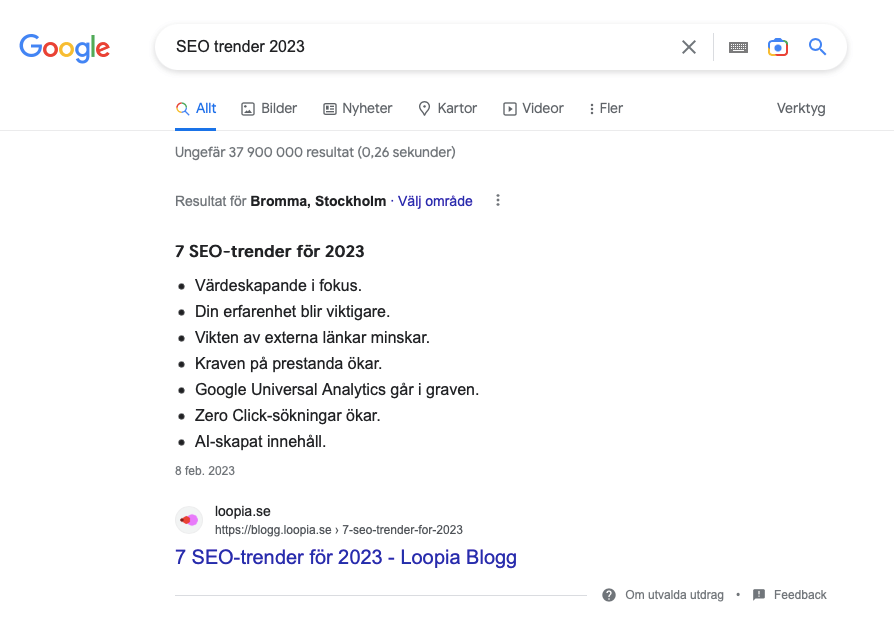

Digital Marknadsföring
SEO
SEM
Sociala Medier
Vi har uppnått arbetssätt och erbjuder smarta lösningar inom seo, sem och sociala medier.
Att optimera din närvaro på sökmotorer är en oumbärlig del av din digitala marknadsföringsstrategi. Sökmotoroptimering används för att öka trafiken till din hemsida och förbättra ditt sökresultat. Därför är det viktigt att förstå hur din webbplats presterar på sökmotorer jämfört med dina konkurrenter.
Toppresultatet på Google har en Click-through rate på 27 procent jämfört med endast 0,63 procent för sidan på andra plats enligt Backlinko. Med en effektiv SEO-strategi kan du förbättra din ranking på sökmotorer och öka trafiken till din webbplats. Förutom en SEO-analys är en konkurrensanalys viktigt åtgärd för att utveckla en framgångsrik SEO-strategi.
En konkurrensanalys inom SEO hjälper dig att identifiera styrkor och svagheter hos dina konkurrenter och jämföra dig med dem. Genom att genomföra en konkurrensanalys kan du utveckla en strategi för att hålla dig före dem i sökresultatet.
För att genomföra en effektiv konkurrensanalys inom SEO finns det fem viktiga steg som du behöver ta. Genom att följa dessa steg kan du skapa en välgrundad SEO-strategi som hjälper dig att nå din målgrupp och optimera din online-närvaro.
Så låt oss utforska de fem stegen för att genomföra en effektiv konkurrensanalys inom SEO, och lära oss hur vi kan optimera vår online närvaro för att nå större framgångar.
För att skapa en effektiv SEO-strategi är det viktigt att identifiera dina konkurrenter och deras prestationer på sökmotorer. Oavsett om du är en ny startup eller ett etablerat företag, bör du ha en klar uppfattning om vilka som är dina konkurrenter inom sökmotoroptimering.
För att identifiera dina konkurrenter, bör du börja med att göra en lista över sökord och webbplats sökningar som du vill ranka högt för. Därefter bör du undersöka vilka webbplatser eller företag som dyker upp i sökresultaten för dessa sökord.
Till exempel, om du vill ranka högt för sökordet "SEO-trender 2023", bör du undersöka vilka webbplatser som har landat på toppositionerna i sökresultaten för detta sökord. I detta exempel rankar Loopia på första plats Detta är din viktigaste konkurrent om du vill ranka högt för detta sökord.
Det finns också flera SEO-konkurrensanalyserverktyg som du kan använda för att identifiera dina konkurrenter. Verktyg som SEMRush och Ahrefs kan hjälpa dig att få insikter om andra webbplatser som rankar högt för samma sökord. Genom att använda dessa verktyg kan du också upptäcka webbplatser som du kanske inte hade tänkt på som konkurrenter.
Genom att identifiera dina konkurrenter inom SEO kan du få en klar uppfattning om deras styrkor och svagheter och utveckla en effektiv SEO-strategi för att hålla dig före dem. Steget att identifiera dina konkurrenter är en viktig grundsten i en framgångsrik konkurrensanalys inom SEO.
En effektiv konkurrensanalys inom SEO kräver en noggrann granskning av dina konkurrenters webbplatser och deras SEO-strategi. Genom att analysera deras SEO-strategi kan du få värdefulla insikter om deras styrkor och svagheter, och utveckla en effektiv strategi för att hålla dig före dem.
För att analysera dina konkurrenters SEO-strategi, bör du granska deras webbplatsstruktur, de typer av skapat innehåll och de sökord som de riktar sig till. Du bör också kontrollera deras webbplatsens hastighet och mobila responsivitet för att få en klar uppfattning om deras tekniska SEO.

Det är också viktigt att analysera dina konkurrenters innehåll för att förstå vilka typer av innehåll som får mest trafik. Genom att identifiera deras topprankade sidor och sidor som driver högst procentandel av trafik kan du få en uppfattning om vilka ämnen som resonera med din målgrupp och vilka typer av innehåll du bör producera.
Sociala medier är också en viktig del av din konkurrentanalys inom SEO. Du bör undersöka dina konkurrenters närvaro i sociala medier, antalet följare de har och vilken typ av innehåll de delar. Detta hjälper dig att förstå hur dina konkurrenter använder sociala medier för att driva trafik till sina webbplatser.
Slutligen bör du kontrollera dina konkurrenters ranking för de sökord som du riktar dig till. Genom att förstå vilka sökord dina konkurrenter rankar för och hur bra de presterar, kan du utveckla en strategi för att ranka högre i sökresultatet.
Att analysera din konkurrenters SEO-strategi är en viktig del av en effektiv konkurrensanalys inom SEO. Genom att använda dessa steg kan du förstå dina konkurrenters prestationer och utveckla en välgrundad SEO-strategi för att hålla dig före dem.
Att identifiera de sökord som dina konkurrenter riktar sig till är en viktig del av en effektiv konkurrensanalys inom SEO. Detta hjälper dig att förstå deras strategi och identifiera sökordsmöjligheter som du kan utnyttja för att ranka högre i sökresultatet.
När du analyserar dina konkurrenters sökord bör du inte bara fokusera på deras primära sökord, utan också på sökord som de rankar lägre för på första sidan av sökmotorernas resultat (SERP). Dessa sökord kan ge dig möjligheter att överträffa dina konkurrenter och ranka högre i sökresultatet.
För att hitta sökordsmöjligheter bör du också leta efter sökordsgap. Detta innebär att identifiera termer eller fraser som dina konkurrenter inte riktar sig till och som du kan använda för att ranka högre i sökresultatet. Verktyg som SEMRush eller AHREFS kan hjälpa dig att hitta dessa sökordsmöjligheter.
Du bör också undersöka sökord som dina konkurrenter kanske har förlorat och som har en hög sökvolym. Genom att förstå varför dina konkurrenter förlorade i ranking och skapa innehåll som inkluderar dessa sökord, kan du utnyttja dessa sökordsmöjligheter och ranka högre i sökresultatet.
Genom att identifiera dina konkurrenters sökordsstrategi kan du få en överblick av deras prestationer och utveckla en effektiv SEO-strategi för att hålla dig före dem.
En viktig del av en konkurrensanalys inom SEO är att analysera dina konkurrenters On-Page Optimering. Genom att undersöka deras sidor som rankas högre än din kan du identifiera vad som gör dem mer effektiva när det gäller positionering på sökmotorer.
När du utför en On-Page-analys bör du överväga flera element, inklusive titlar, rubriker, intern länkstruktur, kvalitativt innehåll, bilder och videor, schema-märkning och strukturerad data, URL:er och kundupplevelse. Alla dessa faktorer spelar en viktig roll i din webbplats ranking i sökresultatet.
Titlar och rubriker är viktiga för Google eftersom de visar hur relevant en sökning är för ett visst sökord och är en rankingfaktor. Se till att dina titel-taggar och rubriktaggar är korrekta och kopplade till relevanta sökord. Överväg också att använda interna länkar för att dirigera besökare till relevant innehåll och för att ge dina sidor SEO-juice.
Kvalitativt innehåll är viktigt för att locka besökare till din webbplats och ranka högre i sökresultatet. Dina konkurrenter som rankas högt kanske använder bloggar för att bli auktoriteter på ämnet, så gör en snabb sökning för att ta reda på vad de gör. Bilder och videor kan också optimeras för webben och mobilen genom att taggas på rätt sätt med beskrivande och relevanta namn.
Schema-märkning och strukturerad data kan också förbättra synligheten i sökresultat genom att hjälpa sökmotorer att förstå innehållet på en sida. Dessutom bör du titta på URL:er för att se om de är beskrivande, koncisa och inkluderar relevanta sökord. Kundupplevelsen är också viktig, så titta på layouten på dina konkurrenters sidor, navigeringen och laddningstiden för att se hur de jämför sig med din.
Genom att analysera dina konkurrenters On-Page Optimering kan du optimera din webbplats för att ranka högre i sökresultatet och öka din webbplats auktoritet.
En av de viktigaste faktorerna för en stark SEO-strategi är att ha en bra länkstrategi. Backlinks är länkar som kommer från andra webbplatser och är avgörande för att visa sökmotorer att ditt innehåll är auktoritativt och pålitligt. Det är därför viktigt att analysera dina konkurrenters backlink-profiler för att se hur de har lyckats skaffa sina länkar.
När du granskar dina konkurrenters länkstrategi bör du använda verktyg som Ahrefs, SEMrush eller Moz för att få insikter om vilka webbplatser som länkar till dem. Men det är viktigt att komma ihåg att kvalitet är viktigare än kvantitet när det gäller backlinks. Lågkvalitativa länkar kan snarare skada din ranking och betraktas som spam, så det är viktigt att inte använda outreach bara för att få länkar från var som helst.
Fokusera på högkvalitativa länkar från auktoritativa webbplatser som kan bidra till att öka din egen auktoritet. Till exempel, om en av dina konkurrenters sidor länkas från en hög auktoritativ webbplats som Aftonbladet, så ger det auktoritet till deras sidor och är bra för deras ranking. Försök att replikera dessa länkar genom att skapa liknande innehåll som är lika värdefullt och relevant.
Genom att analysera dina konkurrenters länkstrategi kan du också få insikter om vilka webbplatser som länkar till dem och som kan tänkas länka till dig. Du kan alltid kontakta dessa webbplatser om du har en ny blogg eller guide som täcker ett nytt ämne eller på ett bättre sätt för att få tillbaka länkar. Detta kan bidra till att öka din ranking på sökmotorerna och därmed öka din synlighet online.
Behöver du hjälp och se varför dina konkurrenter lyckas men inte du? Next Solution är en SEO byrå i Stockholm som hjälper kunder både nationellt och internationellt.

SEO
SEM
Sociala Medier
Vi har uppnått arbetssätt och erbjuder smarta lösningar inom seo, sem och sociala medier.
Page Speed
Web Design
UI/UX
Vi levererar snabba hemsidor med hög prestanda.
PR
Influencer Marketing
Ett kostnadseffektivt sätt att skapa uppmärksamhet för era produkter och tjänster.
Hur kan man identifiera sina viktigaste konkurrenter för en SEO-konkurrentanalys?
För att identifiera viktiga konkurrenter för en SEO-konkurrentanalys kan man först lista potentiella konkurrenter. Därefter bör man granska deras sökresultat på Google och organiska trafik för att bedöma vilka av dem som presterar bäst inom sökmotoroptimering och utgör störst konkurrens.
Hur kan man utvärdera konkurrenters användarupplevelse (UX) i en SEO-konkurrentanalys?
För att utvärdera konkurrenters användarupplevelse (UX) kan man granska deras webbplatsstruktur, navigerbarhet, sidhastighet, mobilanpassning och innehållets kvalitet. En bra UX bidrar till att besökare stannar kvar längre på webbplatsen, vilket kan ha en positiv inverkan på SEOn
Hur kan man dra nytta av konkurrenternas svagheter identifierade i en SEO-konkurrentanalys?
Efter att ha identifierat konkurrenternas svagheter inom SEO kan man dra nytta av dessa genom att förbättra sitt eget företags prestation inom dessa områden. Till exempel kan man skapa bättre och mer relevant innehåll, förbättra teknisk SEO, optimera användarupplevelsen eller stärka den externa länkprofilen. Genom att fokusera på områden där konkurrenterna underpresterar kan man skapa en konkurrensfördel och förbättra webbplatsens ranking i sökmotorer.